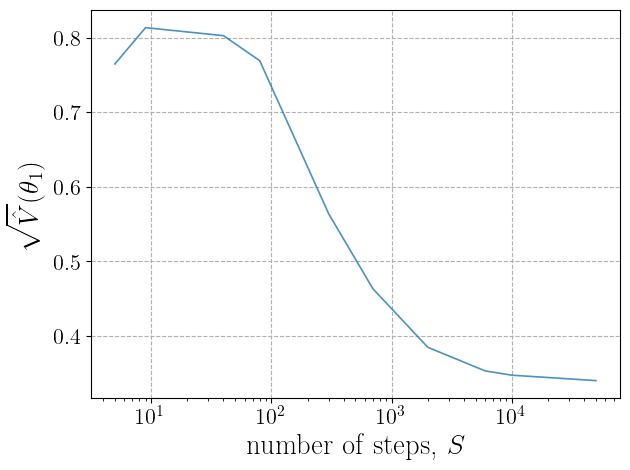
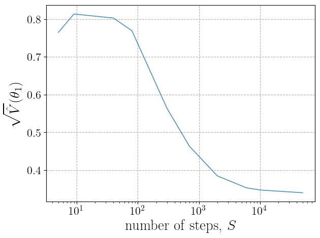
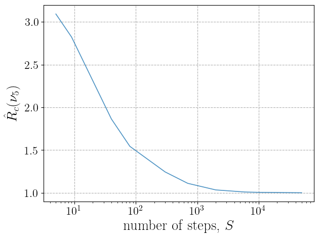
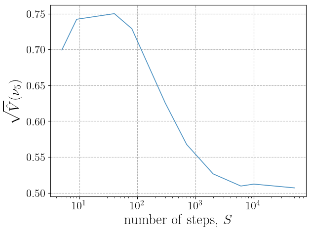
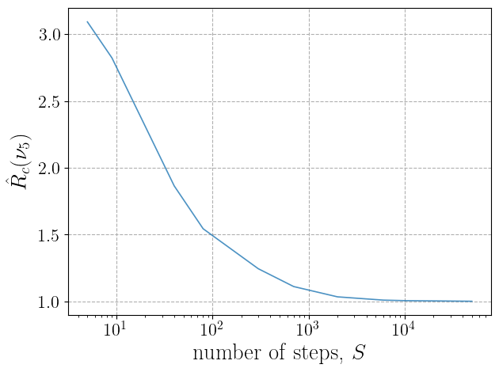
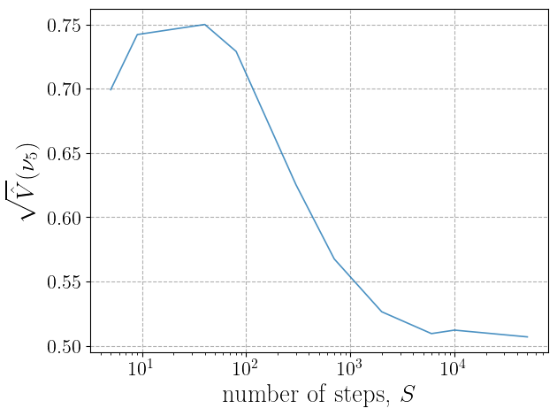

The Sampler object¶
Summary¶
The Sampler class is an API to the emcee Python package that can be used to sample
Likelihood objects (more precisely the corresponding logpdf function) and export data
as a Data objects. The Sampler object offers several methods to
perform MCMC sampling, analyze convergence, and produce different kind of plots.
The API uses emcee to perform the sampling and manage the backend, which ensures that samples are safely stored to file
at any time of the sampling process. See also the Likelihood object and
the Data object, which are respectively used to initialize the
Sampler class and to export the Data object.
Usage¶
We give here a brief introduction to the use of the Sampler class. Refer to the
full class documentation for more details. All examples will be referred to the toy likelihood discussed in
the Likelihood object Usage section of the documentation.
The Sampler class has been thought to be as flexible as possible in terms of initialization
and input parameters. Indeed the object can be initialized by passing different combinations of arguments and the
Sampler.__init__ method always extracts (or creates if it does not exist) the file
corresponding to the Sampler.likelihood_script_file attribute.
The likelihood related parameters and the logpdf are always set by importing this file as a module, which instantiates a
Likelihood object, and by extracting the parameters from it.
The procedure of passing the Likelihood object through a script file instead of
passing it directly may seem redundant. However, this is needed to ensure that MCMC properly runs in parallel also on
Windows machines, where the multiprocessing package may have unexpected behavior.
Let us start by creating a new Sampler object, which requires the input argument
new_sampler=True. We can proceed in three different ways, by giving as input one of the three arguments
likelihood_script_file, likelihood, and, in case we have previously saved a Sampler
and we are interested in creating a new sampler with the same parameters, the argument sampler_input_file. Each of these
arguments is used to determine the attribute Sampler.likelihood_script_file
which is then used to import the likelihood related attributes. If more than one of these inputs is give, only one is used,
with priority in the order likelihood_script_file, likelihood, and sampler_input_file.
Let us see the three options in code:
Initialization from
likelihood_script_fileWe assume that a likelihood script file has been already created (see then the Likelihood object Usage section of the documentation). The
Samplercan then be initialized asimport DNNLikelihood sampler = DNNLikelihood.Sampler(new_sampler=True, likelihood_script_file=<my_output_folder>/toy_likelihood_script, nsteps=50000)This initialize the object with a required number of steps
nsteps=50000(this could then be changed to run for more steps). We have not passed amove_strinput so that the default emcee moveemcee.moves.StretchMove()will be set (see theSampler.move_strattribute documentation for more details). Moreover, sinceparallel_CPUhas not been specified, the attributeSampler.parallel_CPUis automatically set toTrueand the sampler will be running in parallel mode.When the object is created, it is automatically saved and three files are created:
<my_output_folder>/toy_sampler.json
<my_output_folder>/toy_sampler.log
<my_output_folder>/toy_sampler_backend.h5
Initialization from
likelihoodThe exact same object could be initialized directly from a
Likelihoodone. In this case theSampler.__init__method takes care of generating the script file:import DNNLikelihood likelihood = DNNLikelihood.Likelihood(likelihood_input_file="<my_output_folder>/toy_likelihood") sampler = DNNLikelihood.Sampler(new_sampler=True, likelihood=likelihood, nsteps=50000)Initialization from
sampler_input_fileFinally, in the case the object has been initialized in the past, and the output files are available, a new object can be initialized with the same parameters by passing the
sampler_input_fileinput. In this case, again, theSampler.__init__method uses the argument to determine or create theSampler.likelihood_script_fileand then proceeds in the usual way. The following code produces an object identical to the previous ones:import DNNLikelihood sampler = DNNLikelihood.Sampler(new_sampler=True, nsteps=50000, sampler_input_file=<my_output_folder>/toy_sampler)
A previously saved Sampler could be imported by using the new_sampler=False input.
Again, one could provide one of the three arguments likelihood_script_file, likelihood,
and sampler_input_file. This time, each of these
arguments is used to determine the Sampler.likelihood_script_file and
Sampler.sampler_input_file attributes, used to build the object. If more than
one of these inputs is give, only one is used, with priority in the order sampler_input_file,
likelihood_script_file, and likelihood. Obviously, independently on the passed input arguments,
the files corresponding to Sampler.sampler_input_file should exist (i.e. a
saved Sampler object should be available).
The following three code options produce the same result, importing the object saved before:
Import from
sampler_input_fileimport DNNLikelihood sampler = DNNLikelihood.Sampler(new_sampler=False, sampler_input_file=<my_output_folder>/toy_sampler)Import from
likelihood_script_fileimport DNNLikelihood sampler = DNNLikelihood.Sampler(new_sampler=False, likelihood_script_file=<my_output_folder>/toy_likelihood_script)Import from
likelihoodThe exact same object could be initialized directly from a
Likelihoodone. In this case theSampler.__init__method takes care of generating the script file:import DNNLikelihood likelihood = DNNLikelihood.Likelihood(likelihood_input_file="<my_output_folder>/toy_likelihood") sampler = DNNLikelihood.Sampler(new_sampler=False, likelihood=likelihood)
When the object is imported, the Sampler.log attribute is updated, as well as the corresponding file
<my_output_folder>/toy_sampler.log. If a new nsteps input, larger than the number of steps available in the existing backedn is passed,
then this is saved in the Sampler.nsteps, which is otherwise set to the number of available steps.
Also the moves_str input can be passed to update (change) the move of the sampler.
Now that we have discussed how to create and import the object, let us see how to use it. The first thing we want to do is to produce a sampling, which is done as follows:
sampler.run_sampler(verbose=2)
This runs the sampler and, through the verbose=2 argument, shows a progress bar, together with the remaining time. Since the object
has attribute Sampler.parallel_CPU set to True the sampling is run in n parallel
processes, with n equal to the number of physical (not logical) cores. While the sampler runs, all produced sampler are saved in related
time in the backend file corresponding to the Sampler.sampler_output_backend_file
attribute. At the end of the sampling also the log attribute and file are updated.
The Sampler.sampler and Sampler.backend correspond to the
emcee objects emcee.EnsembleSampler and emcee.Backends and we refer to the emcee documentation for their use.
Nevertheless, the Sampler object, includes several methods that allow to perform convergence studies,
produce plots, and extract samples without the need of directly digging into the emcee objects and documentation.
As a first step we can compute the the Gelman and Rubin metrics [GR92] for some parameters. For instance let us
compute the metrics for parameters 0 (poi) and 5 (nuis) after [500,1000,5000,10000,50000] steps:
sampler.gelman_rubin(pars=[0,5],nsteps=[500,1000,5000,10000,50000])
>>> array([[0.00000000e+00, 5.00000000e+02, 1.09139684e+00, 2.47454986e-01, 2.08260547e-01],
[0.00000000e+00, 1.00000000e+03, 1.05672208e+00, 1.84330055e-01, 1.65349725e-01],
[0.00000000e+00, 5.00000000e+03, 1.01555635e+00, 1.26862627e-01, 1.23053024e-01],
[0.00000000e+00, 1.00000000e+04, 1.00790794e+00, 1.20567487e-01, 1.18705125e-01],
[0.00000000e+00, 5.00000000e+04, 1.00124959e+00, 1.15572381e-01, 1.15290829e-01],
[5.00000000e+00, 5.00000000e+02, 1.13686644e+00, 3.49600912e-01, 2.71401392e-01],
[5.00000000e+00, 1.00000000e+03, 1.06837042e+00, 3.03575872e-01, 2.66503447e-01],
[5.00000000e+00, 5.00000000e+03, 1.01267127e+00, 2.61092073e-01, 2.54676062e-01],
[5.00000000e+00, 1.00000000e+04, 1.00587726e+00, 2.62245501e-01, 2.59235550e-01],
[5.00000000e+00, 5.00000000e+04, 1.00122323e+00, 2.56878972e-01, 2.56262912e-01]])
This returns an array where in the first column there is the parameter, in the second the number of steps and in the third to fifth
the values of the metrics. See the documentation of the Sampler.gelman_rubin method for
details.
We could also produce a plot of these metrics using the Sampler.plot_gelman_rubin
method
sampler.plot_gelman_rubin(pars=[0,5], npoints=10)
 

{kind=link}
 



{kind=link}
{kind=link}

Convergence could also be monitored through the autocorrelation time, which could be plot using the
Sampler.plot_autocorr. See the method documentation for details on the various
algorithms and options. For instance, using all available methods we can monitor parameters 0 and 5 by
sampler.plot_autocorr(pars=[0,5])


The 1D distribution of the parameters can be obtained through the Sampler.plot_dist
method by
sampler.plot_dist(pars=[0,5])


The last series of plots that can be automatically obtained are the parameters and logpdf evolution for a given number of walkers
with the number of steps.
They are plot by the Sampler.plot_chains and
Sampler.plot_chains_logpdf methods respectively. For instance we could plot
30 randomly selected walkers as follows:
sampler.plot_chains(pars=[0,5],n_chains=30)
sampler.plot_chains_logprob(n_chains=30)
{kind=link}


The full list of figures we produced can be extracted from the Sampler.figures_list
sampler.figures_list()
>>> ['<my_output_folder>/toy_sampler_figure_GR_Rc_0.pdf',
'<my_output_folder>/toy_sampler_figure_GR_sqrtVhat_0.pdf',
'<my_output_folder>/toy_sampler_figure_GR_sqrtW_0.pdf',
'<my_output_folder>/toy_sampler_figure_GR_Rc_5.pdf',
'<my_output_folder>/toy_sampler_figure_GR_sqrtVhat_5.pdf',
'<my_output_folder>/toy_sampler_figure_GR_sqrtW_5.pdf',
'<my_output_folder>/toy_sampler_figure_distr_0.pdf',
'<my_output_folder>/toy_sampler_figure_distr_5.pdf',
'<my_output_folder>/toy_sampler_figure_autocorr_0.pdf',
'<my_output_folder>/toy_sampler_figure_autocorr_5.pdf',
'<my_output_folder>/toy_sampler_figure_chains_0.pdf',
'<my_output_folder>/toy_sampler_figure_chains_5.pdf',
'<my_output_folder>/toy_sampler_figure_chains_logpdf.pdf']
The Sampler.nsteps can be increased at any time, and the method
Sampler.run_sampler can be called again to run the steps missing to reach
Sampler.nsteps. For instance, to run for another 20K steps one does
sampler.nsteps = 70000
sampler.run_sampler()
Once a satisfactory sampling has been obtained, we can generate a Data object storing the
desired dataset (see the Data object). The dataset is obtained from the sampling by taking samples after a possible burnin number of steps, and
to avoid large correlation between samples, by taking a step every thin (a fully unbiased sampling, that is a faithful
random number generator would need thin equal or slightly larger than the autocorrelation time). This is done with the
Sampler.get_data_object as follows:
data = sampler.get_data_object(nsamples=100000, burnin=5000, thin=10, dtype="float64", test_fraction=0)
This generates a Data object with 100000 sampler obtained by discarding from the sampling the first
5000 steps and by taking one every 10 steps after (until the required nsamples is reached). If the number nsamples is
larger than the one available consistently with the burnin and thin options, then all available samples are taken (and a warning
message is printed). The user may choose the data type of the exported samples dtype (default is "float64"), which is useful
to format data with the precision needed to train the DNNLikelihood. Finally, the user may already choose a test_fraction, so that
data are divided, inside the Data object, into two samples, one used to feedtrain and validation data
and the other used as test data. If test_fraction is left to the default value 0, it could simply be updated afterwards from
the Data object itself.
As a final step we can save the state of the Sampler object by using the
Sampler.save_sampler method.
sampler.save_sampler(overwrite=True)
The user should remember that the default value of the overwrite argument for saving functions is False. Therefore, in order not
to produce new files, overwrite=True should be explicitly specified when making intermediate or final saving of the objects.
Class¶
-
class
DNNLikelihood.Sampler(new_sampler=None, likelihood_script_file=None, likelihood=None, nsteps=None, moves_str=None, parallel_CPU=None, vectorize=None, sampler_input_file=None, verbose=True)[source]¶ This class contains the
Samplerobject, which allows to perform Markov Chain Monte Carlo (MCMC) using the emcee package (ensemble sampling MCMC). See ref. [FMHLG13] for details about emcee. On top of performing MCMC theSamplerobject contains several methods to check convergence, and exportDataobjects that can be used to train and test the DNNLikelihood. The object can be instantiated both passing aLikelihoodobject or alikelihood_script_filecreated with theLikelihood.save_likelihood_scriptmethod.
Arguments¶
new_sampler¶If
Truea newSamplerobject is created from input arguments, while ifFalsethe object is reconstructed from saved files (see the__init__method). It is used to build theSampler.new_samplerattribute.
type:
booldefault:
None
likelihood_script_file¶File name (either relative to the code execution folder or absolute) of a
likelihood_script_filegenetated by theLikelihood.save_likelihood_scriptmethod. It is used to build theSampler.likelihood_script_fileattribute.
type:
strorNonedefault:
None
likelihood¶A
Likelihoodobject. It is used to initialize theSamplerobject directly from theLikelihoodone. This argument is not saved into an attribute: theLikelihoodobject is copied, used to save a likelihood script file and to set theSampler.likelihood_script_fileattribute if the latter is not passed through the argumentlikelihood_script_file(see the__init__method).
type:
Likelihoodobject orNonedefault:
None
nsteps¶Final number of MCMC steps. When the object is initialized with the
new_samplerargument set toFalsethen, ifnstepsis larger than the number of steps available in the backend, it is saved in theSampler.nsteps, otherwise the latter is set equal to the number of steps available in the backend.
type:
intorNonedefault:
None
moves_str¶String containing an emcee.moves object. If
Noneis passed, the defaultemcee.moves.StretchMove()is passed. It is used to set theSampler.moves_strattribute.
type:
strorNonedefault:
Noneexample: “[(emcee.moves.StretchMove(0.7), 0.2), (emcee.moves.GaussianMove(0.1, mode=’random’,factor=None),0.8)]”
This gives a move that is 20%
StretchMovewith parameter 0.7 and 80%GaussianMovewith covariance 0.1 and mode'random'(i.e. updating a single random parameter at each step). See the emcee.moves documentation for more details.
parallel_CPU¶If
Truethe MCMC is run in parallel on the available CPU cores, otherwise only a single core is used. It is used to set theSampler.parallel_CPUattribute.
type:
booldefault:
True
vectorize¶If
True, the methodSampler.logpdfis expected to accept a list of points and to return a list of logpdf values, andSampler.parallel_CPUis automatically set toFalse. See the emcee.EnsembleSampler documentation for more details. It is used to set theSampler.vectorizeattribute.
verbose¶Argument used to set the verbosity mode of the
Likelihood.__init__method and the default verbosity mode of all class methods that accept averboseargument. See Verbosity mode.
type:
booldefault:
True
Attributes¶
DNNLikelihood.Sampler.backend¶An
emcee.Backendsobject (see the emcee.Backends documentation for details). It is initialized (either from scratch or through an existing file) by theSampler.__init_backendmethod.
type:
emcee.Backendsobject
DNNLikelihood.Sampler.sampler_output_backend_file¶Name (with absolute path) of the emcee HDF5 backend file. It is set to
Sampler.output_folder+ "_backend.h5". See the emcee.Backends documentation for details about theemcee.Backendsobject.
type:
str
DNNLikelihood.Sampler.figure_files_base_path¶Absolute path to the exported figures. It includes the base figure name and is automatically generated from the
Sampler.output_folderandSampler.nameattributes.
type:
str
DNNLikelihood.Sampler.figures_list¶List of absolute paths to the generated figures.
type:
listofstr
DNNLikelihood.Sampler.generic_pars_labels¶List containing parameters names automatically generated by the function
utils.define_generic_pars_labels. All parameters of interest are namedr"$\theta_{i}$"withiranging between one to the number of parameters of interest and all nuisance parameters are namedr"$\nu_{j}$"withjranging between one to the number of nuisance parameters. Parameters labels are always used as “raw” strings (like, for instance,r"%s"%generic_pars_labels[0]) and can contain latex expressions that are properly compiled when making plots.
type:
listshape:
[ ]length:
n_pars
DNNLikelihood.Sampler.likelihood_script_file¶Absolute path to the .py script containing the code necessary to intantiate a
Likelihoodobject and define the corresponing parameters. TheSampler.__init_likelihoodmethod loads it as a module, which instantiate aLikelihoodobject and defines parameters and logpdf. See theSampler.__init__method for details on how the attribute is set.
type:
strorNonedefault:
None
DNNLikelihood.Sampler.log¶Dictionary containing a log of the
Samplerobject calls. The dictionary has datetime strings as keys and actions as values. Actions are also dictionaries, containing details of the methods calls.
type:
dictkeys:
datetime.now().strftime("%Y-%m-%d-%H-%M-%S.%fZ")[:-3]values:
dictwith the following structure:
- “action” (value type:
str)Short description of the action. possible values:
"created","loaded","created backend","loaded backend","init sampler","run sampler","saved","computed Gelman-Rubin","saved figure","created data object".
- “pars” (value type:
listofint)
parsinvolved in the corresponding action.
- “available steps” (value type:
int)Number of steps available in backend.
- “nsteps” (value type:
int)
nstepsinvolved of the corresponding action.
- “file name” (value type:
str)File name of file involved in the action.
- “file path” (value type:
str)Path of file involved in the action.
- “files names” (value type:
listofstr)List of file names of files involved in the action.
- “files paths” (value type:
listofstr)List of paths of files involved in the action.
- “updated file name”
File name of file involved in the action.
- “updated file path” (value type:
str)Path of file involved in the action.
type:
callable
Could accept
x_pars
Values of the parameters for which logpdf is computed. It could be a single point in parameter space corresponding to an array with shape
(n_pars,)or a list of points corresponding to an array with shape(n_points,n_pars).
type:
numpy.ndarraypossible shapes:
(n_pars,)or(n_points,n_pars)args
List of additional arguments required by the
logpdffunction and passed through thelogpdf_argsinput argument.
type:
listor Noneshape of list:
[ ]Could return
floatornumpy.ndarraywith shape(n_points,)
DNNLikelihood.Sampler.logpdf:Callable function that could accept
x_parseither as a single point in parameter space corresponding to an array with shape(n_pars,)or as a list of points corresponding to an array with shape(n_points,n_pars)and that returns either afloator a list of computed logpdf values, depending on the input. In case of a scalar function the attributeSampler.vectorizeis automatically set to False. The function could also accept additional argumentsargs, passed through theSampler.logpdf_argsattribute. The attribute is assigned by theSampler.__init_likelihoodmethod.
type:
callable
Could accept
x_par
Values of the parameters for which logpdf is computed. It could be a single point in parameter space corresponding to an array with shape
(n_pars,)or a list of points corresponding to an array with shape(n_points,n_pars).
type:
numpy.ndarraypossible shapes:
(n_pars,)or(n_points,n_pars)args
List of additional arguments required by
Sampler.logpdfand passed through theSampler.logpdf_argsattribute.
type:
listor Noneshape of list:
[ ]Could return
Value or array of values of the logpdf.
type:
floatornumpy.ndarrayshape for numpy.ndarray:
(n_points,)
DNNLikelihood.Sampler.logpdf_args¶Attribute corresponding to the input argument
logpdf_args.
type:
listorNoneshape of list:
[ ]
DNNLikelihood.Sampler.moves¶An
emcee.movesobject generated by evaluating theSampler.moves_strattribute. See the emcee.moves documentation for details.
type:
emcee.movesobject
DNNLikelihood.Sampler.moves_str¶String representing an instance to an
emcee.movesobject. IfNoneis passed, the defaultemcee.moves.StretchMove()is passed. See the emcee.moves documentation for details.
type:
strorNoneexample:
"[(emcee.moves.StretchMove(0.7), 0.2), (emcee.moves.GaussianMove(0.1, mode='random',factor=None),0.8)]"This gives a move that is 20% StretchMove with parameter 0.7 and 80% GaussianMove with covariance 0.1 and mode “random” (i.e. updating a random single parameter at each step).
DNNLikelihood.Sampler.name¶Name of the
Samplerobject. It is used to generate output files. It is automatically generated from the corresponding attribute of theLikelihoodobject used to initialize theSamplerby theSampler.__init_likelihoodmethod by replacing the suffix “_likelihood” with the suffix “_sampler”
type:
str
DNNLikelihood.Sampler.ndims¶Number of dimensions of the input vector (i.e. number of parameters entering in the logpdf). It is automatically set to the length of the first point in
Sampler.pars_init_vec.
type:
int
DNNLikelihood.Sampler.new_sampler¶Attribute corresponding to the input argument
new_sampler. If it isTruea newSamplerobject, corresponding to a newSampler.backendis generated. If it isFalsetheSamplerobject is loaded from saved files, or, if a backend file is not foundnew_sampleris automatically set toTrueand a new one is created.
type:
bool
DNNLikelihood.Sampler.nsteps¶Attribute corresponding to the input argument
nstepsand representing the number of MCMC steps to run. When an existingSampler.backendis loaded if the value of the input argumentnstepsis smaller than the number of steps available, thenSampler.nstepsis automatically updated to the available steps. The attribute always represents the final number of steps, so if the number of existing steps is not zero, the sampling will only run until it reachesSampler.nsteps.
type:
int
DNNLikelihood.Sampler.nwalkers¶Number of walkers (equivalent of chains for Ensamble Sampler MCMC). It is automatically set to the length of
Sampler.pars_init_vecvector.
type:
int
DNNLikelihood.Sampler.output_folder¶Absolute path to the folder where all output files are saved. It is automatically set to the corresponding attribute of the
Likelihoodby theSampler.__init_likelihoodmethod.
type:
str
DNNLikelihood.Sampler.parallel_CPU¶Attribute corresponding to the input argument
parallel_CPU. IfTruethe MCMC is run in parallel on the available CPU cores, otherwise only a single core is used.
type:
bool
DNNLikelihood.Sampler.pars_init_vec¶Array of points with parameters initialization for each walker.
type:
numpy.ndarrayshape:
(nwalkers,n_pars)
pars_labels¶List containing parameters names as strings. It is automatically set to the corresponding attribute of the
Likelihoodby theSampler.__init_likelihoodmethod. Parameters labels are always parsed as “raw” strings (like, for instance,r"%s"%pars_labels[0]) and can contain latex expressions that are properly compiled when making plots.
type:
listshape:
[ ]length:
n_pars
DNNLikelihood.Sampler.pars_pos_nuis¶Numpy array containing the positions in the parameters list of the nuisance parameters. It is automatically set to the corresponding attribute of the
Likelihoodby theSampler.__init_likelihoodmethod.
type:
numpy.ndarrayshape:
(n_nuis,)
DNNLikelihood.Sampler.pars_pos_poi¶Numpy array containing the positions in the parameters list of the parameters of interest. It is automatically set to the corresponding attribute of the
Likelihoodby theSampler.__init_likelihoodmethod.
type:
numpy.ndarrayshape:
(n_poi,)
DNNLikelihood.Sampler.sampler¶An
emcee.EnsembleSamplerobject (see the emcee.EnsembleSampler documentation for details). It is initialized by the :meth:`Sampler.__init_sampler <DNNLikelihood.Sampler._Sampler__init_sampler> method.
type:
emcee.EnsembleSamplerobject
DNNLikelihood.Sampler.sampler_input_file¶Attribute corresponding to the input argument
sampler_input_file. Whenever theSampler.new_samplerattribute isFalse, it is used to reconstructed the object from input files (see theSampler.__init__method for details).
type:
strorNone
DNNLikelihood.Sampler.sampler_output_json_file¶Absolute path to the .json file where part of the
Samplerobject is saved (see theSampler.save_sampler_jsonmethod for details). This is automatically generated from theSampler.output_folderandSampler.nameattributes.
type:
str
DNNLikelihood.Sampler.sampler_output_log_file¶Absolute path to the .log file where the
Sampler.logattribute is saved (see theSampler.save_sampler_logmethod for details). This is automatically generated from theSampler.output_folderandSampler.nameattributes.
type:
str
DNNLikelihood.Sampler.vectorize¶If
True, the functionSampler.logpdfis expected to accept a list of points and to return a list of logpdf values. When it is set toTruetheSampler.__check_vectorizechecks the consistency by callingSampler.logpdfon an array of points and, in case it fails, it setsSampler.vectorizetoFalse. When it isTrue, theSampler.parallel_CPUattribute is automatically set toFalse. See the emcee.EnsembleSampler documentation for more details.
type:
bool
DNNLikelihood.Sampler.verbose¶Attribute corresponding to the input argument
verbose. It represents the verbosity mode of theSampler.__init__method and the default verbosity mode of all class methods that accept averboseargument. See Verbosity mode.
type:
boolorint
Methods¶
Sampler.__init__(new_sampler=None, likelihood_script_file=None, likelihood=None, nsteps=None, moves_str=None, parallel_CPU=None, vectorize=None, sampler_input_file=None, verbose=True)[source]¶The
Samplerobject can be initialized in two different ways, depending on the value of thenew_samplerargument.1.
new_sampler=True: all attributes are set from input arguments. TheSampler.likelihood_script_fileattribute is set from fromlikelihood_script_fileinput if given, otherwise fromlikelihoodinput if given, otherwise fromsampler_input_file. Afterwards theSampler.__init_likelihoodmethod is called.2.
new_sampler=False: theSampler.sampler_input_fileattribute is set fromsampler_input_fileif given, otherwise fromlikelihood_script_fileinput if given, otherwise fromlikelihood. Arguments are set fromSampler.sampler_input_file. Afterwards theSampler.__init_likelihoodmethod is called. If the import failsSampler.__init__proceeds withnew_sampler=True(see 1.).Attributes that are always set from input arguments (if they are not
None)Attributes that are set from
Sampler.sampler_input_fileifnew_sampler=False:
Sampler.nsteps(if not given as input)
Sampler.moves_str(if not given as input)
Sampler.parallel_CPU(if not given as input)
Sampler.vectorize(if not given as input)Attributes that are set by
Sampler.__init_likelihood:
Sampler.name(if not imported fromSampler.sampler_input_file)
Sampler.logpdf
Sampler.output_folder(if not imported fromSampler.sampler_input_file)Attributes that are set after
Sampler.__init_likelihood:
Sampler.backend(set bySampler.__init_backend)
Sampler.sampler(set bySampler.__init_backend)
Sampler.moves(set by evaluatingSampler.moves_str)Checks done by
Sampler.__init__:
Sampler.__check_vectorize: checks consistency betweenSampler.vectorizeandSampler.logpdf
Sampler.__check_params_backendcheck consistency of parameters in the backend
Arguments
See Class arguments.
Produces file
Sampler._Sampler__get_likelihood_script_file_from_sampler_input_file()¶Private method that attempts to determine the
Sampler.likelihood_script_fileattribute from theSampler.sampler_input_fileattribute.
Sampler._Sampler__get_likelihood_script_file_from_likelihood(verbose=None)¶Private method that generates the
Sampler.likelihood_script_fileattribute and corresponding file from theSampler.likelihoodattribute.
Arguments
verbose
Verbosity mode. See the Verbosity mode documentation for the general behavior.
type:
booldefault:
None
Sampler._Sampler__get_sampler_input_file_from_likelihood_script_file()¶Private method that attempts to determine the
Sampler.sampler_input_fileattribute from theSampler.likelihood_script_fileattribute.
Sampler._Sampler__get_sampler_input_file_from_likelihood(verbose=None)¶Private method that attempts to determine the
Sampler.sampler_input_fileattribute from theSampler.likelihoodattribute through theSampler.__get_likelihood_script_file_from_likelihoodandSampler.__get_sampler_input_file_from_likelihood_script_filemethods.
Arguments
verbose
Verbosity mode. See the Verbosity mode documentation for the general behavior.
type:
booldefault:
None
Sampler._Sampler__init_likelihood()¶Private method that sets the likelihood related attributes from the
Sampler.sampler_input_fileattribute. It imports the latter as a module, which instantiates aLikelihoodobject and defines parameters. It is used to set the attributes
Sampler.name(if not imported fromSampler.sampler_input_file)
Sampler.logpdf
Sampler.output_folder(if not imported fromSampler.sampler_input_file)
Sampler._Sampler__load_sampler(verbose=None)¶Private method used to load
Samplerattributes from theSampler.sampler_input_json_fileandSampler.sampler_input_log_filefiles.
Arguments
verbose
Verbosity mode. See the Verbosity mode documentation for the general behavior.
type:
booldefault:
None
Sampler._Sampler__init_backend(verbose=None)¶Private method used to create a backend file
Sampler.sampler_output_backend_filewhenSampler.new_sampleris set toTrueor to load an existig backend fileSampler.sampler_output_backend_filewhenSampler.new_sampleris set toFalse. In caseSampler.new_sampleris set toFalsebut the backend fileSampler.sampler_output_backend_filedoes not exist, thenSampler.new_sampleris automatically set toTrueand a new backend is created. The method creates or loads the backend by calling theSampler.__init_samplerprivate method, which creates and runs the sampler for zero steps. This is done to properly sets both attributesSampler.backendandSampler.sampler.
Arguments
verbose
Verbosity mode. See the Verbosity mode documentation for the general behavior.
type:
booldefault:
None
Sampler._Sampler__init_sampler(verbose=None)¶Private method used to initialize
Sampler.backendandSampler.samplerattributes depending on the value ofSampler.new_sampler.1.
new_sampler=True: a new backend is created, walkers are initialized toSampler.pars_init, and MCMC is run for zero steps to properly create the backend file and initialize the sampler.2.
new_sampler=False: the existing backend is set, walkers are initialized to to the last sample available inSampler.backend, and MCMC is run for zero steps to properly initialize theSampler.samplerattribute.The method runs the mcmc by calling the emcee.EnsembleSampler.run_mcmc method.
Arguments
verbose
Verbosity mode. See the Verbosity mode documentation for the general behavior.
type:
booldefault:
None
Sampler._Sampler__check_vectorize(verbose=None)¶Private method that checks consistency between the
Sampler.vectorizeandSampler.logpdfattributes. In particular, whenSampler.vectorize=Trueit tries to compute logpdf on a vector of parameters. If it fails, then it setsSampler.vectorize=False. Finally, wheneverSampler.vectorize=False, the attributeSampler.parallel_CPUis set toFalse.
Arguments
verbose
Verbosity mode. See the Verbosity mode documentation for the general behavior.
type:
booldefault:
None
Sampler._Sampler__check_params_backend(verbose=None)¶Private method that checks consistency between the attributes
Sampler.nwalkersandSampler.ndimsassigned by theSampler.__init_likelihood. It also checks if the value ofSampler.nstepsis smaller than the number of available steps in the backend and, in such case, it setsSampler.nstepsequal to the number of available steps.
Arguments
verbose
Verbosity mode. See the Verbosity mode documentation for the general behavior.
type:
booldefault:
None
Sampler._Sampler__set_steps_to_run(verbose=None)¶Private method that returns the number of steps to run computed as the difference between the value of
Sampler.nstepsand the number of steps available inSampler.backend. If this difference is negative, a warning message asking to increase the value ofSampler.nstepsis printed.
Arguments
verbose
Verbosity mode. See the Verbosity mode documentation for the general behavior.
type:
booldefault:
None
Sampler._Sampler__set_pars_labels(pars_labels)¶Private method that returns the
pars_labelschoice based on thepars_labelsinput.
Arguments
pars_labels
Could be either one of the keyword strings
"original"and"generic"or a list of labels strings with the length of the parameters array. Ifpars_labels="original"orpars_labels="generic"the function returns the value ofSampler.pars_labelsorSampler.generic_pars_labels, respectively, while ifpars_labelsis a list, the function just returns the input.
type:
listorstrshape of list:
[ ]accepted strings:
"original","generic"
Sampler.run_sampler(verbose=None)[source]¶Runs MCMC sampling. Parameters are initialized to the last last sample available in
Sampler.backendor toSampler.pars_initif no sample is available.Depending on the value of
Sampler.parallel_cputhe sampler is run on a single core (ifFalse) or in parallel using the multiprocessing.Pool method (ifTrue). When running in parallel, the number of processes is set to the number of available (physical) cpu cores using the psutil package byn_processes = psutil.cpu_count(logical=False). See the documentation of the emcee.EnsembleSampler class and of the multiprocessing package for more details on parallel sampling.When using interactive python in Jupyter notebooks if
verbose=2a progress bar is shown.
Arguments
verbose
Verbosity mode. See the Verbosity mode documentation for the general behavior. If
verbose=2a progress bar is shown.
type:
booldefault:
None
Sampler.save_sampler_log(overwrite=False, verbose=None)[source]¶Saves the content of the
Sampler.logattribute in the fileSampler.sampler_output_log_fileThis method is called by the methods
Sampler.run_samplerwithoverwrite=Trueandverbose=verbose_sub
Sampler.save_samplerwithoverwrite=overwriteandverbose=verbose
Sampler.get_data_objectwithoverwrite=Trueandverbose=verbose_sub
Sampler.gelman_rubinwithoverwrite=Trueandverbose=verbose_sub
Sampler.plot_gelman_rubinwithoverwrite=Trueandverbose=verbose_sub
Sampler.plot_distwithoverwrite=Trueandverbose=verbose_sub
Sampler.plot_autocorrwithoverwrite=Trueandverbose=verbose_sub
Sampler.plot_chainswithoverwrite=Trueandverbose=verbose_sub
Sampler.plot_chains_logpdfwithoverwrite=Trueandverbose=verbose_subArguments
overwrite
If
Trueif a file with the same name already exists, then it gets overwritten. IfFalseis a file with the same name already exists, then the old file gets renamed with theutils.check_rename_filefunction.
type:
booldefault:
Falseverbose
Verbosity mode. See the Verbosity mode documentation for the general behavior.
type:
booldefault:
NoneProduces file
Sampler.save_sampler_json(overwrite=False, verbose=None)[source]¶
Samplerobjects are saved to three files: a .json, a .log, and ah .h5, corresponding to the three attributesSampler.sampler_output_json_file,Sampler.sampler_output_log_file, andSampler.sampler_output_backend_file. See theSampler.save_samplermethod documentation for the list of saved attributes.This method is called by the
Sampler.save_samplermethod to save the entire object.
Arguments
overwrite
It determines whether an existing file gets overwritten or if a new file is created. If
overwrite=Truetheutils.check_rename_fileis used to append a time-stamp to the file name.
type:
booldefault:
Falseverbose
Verbosity mode. See the Verbosity mode documentation for the general behavior.
type:
booldefault:
NoneProduces file
Sampler.save_sampler(overwrite=False, verbose=True)[source]¶
Samplerobjects are saved according to the following table.
Saved
Atrributes
Method
X
Sampler.logpdf✔
✔
✔
Sampler.backend_file
Sampler.figure_files_base_path
Sampler.likelihood_script_file
Sampler.sampler_output_json_fileThis methos calls in order the
Likelihood.save_sampler_jsonandLikelihood.save_sampler_logmethods. The backend is automatically saved when running MCMC through theSampler.run_samplermethod.
Arguments
Same arguments as the called methods.
Produces files
Sampler.get_data_object(nsamples='all', burnin=0, thin=1, dtype='float64', test_fraction=0, verbose=None)[source]¶Returns a
Dataobject withnsamplessamples by taking chains and logpdf values, discardingburninsteps, thinning everythinand converting to dtypedtype. Whennsamples="all"(default) all samples available for the given choice ofburninandthinare included to theDNNLikelihood.Dataobject, otherwise only the firstnsamplesare included. Ifnsamplesis more than the available number all the available samples are included and a warning message is printed. Before including samples in theDNNLikelihood.Dataobject the method checks if there are duplicate samples (which would suggest a larger value ofthin) and non finite values of logpdf (e.g.np.nanornp.inf) and print a warning in any of these cases.The method also allows one to pass to the
DNNLikelihood.Dataa value fortest_fraction, which already splits data intotrain(sample from which training and valudation data are extracted) andtest(sample only used for final test) sets. SeeData.test_fractionfor more details.Finally, based on the value of
save, the generatedDNNLikelihood.Dataobject
Arguments
nsamples
Number of samples to include in the
Dataobject.
type:
intorstrallowed string:
"all"default:
"all"burnin
Number of samples to skip as burnin.
type:
intdefault:
0thin
If
thinis larger than one then one sampler every thin is taken.
type:
intdefault:
1dtype
dtype of the data included in the
Dataobject.
type:
strdefault:
"float64"test_fraction
If specified, in the
Dataobject data are already split into train (and valudation) and test sets. See the Data object.
type:
floatin the range(0,1)default:
0verbose
Verbosity mode. See the Verbosity mode documentation for the general behavior.
type:
booldefault:
NoneReturns
Dataobject.Produces files
TBA
Sampler.autocorr_func_1d(x, norm=True, verbose=None)[source]¶Function adapted from the emcee autocorrelation tutorial (see the link for documentation) and used to compute and plot autocorrelation time estimates.
Sampler.auto_window(taus, c)[source]¶Function adapted from the emcee autocorrelation tutorial (see the link for documentation) and used to compute and plot autocorrelation time estimates.
Sampler.autocorr_gw2010(y, c=5.0, verbose=None)[source]¶Function adapted from the emcee autocorrelation tutorial (see the link for documentation). Estimate of the integrated autocorrelation time based on ref. [GW10].
Sampler.autocorr_new(y, c=5.0, verbose=None)[source]¶Function adapted from the emcee autocorrelation tutorial (see the link for documentation). Estimate of the integrated autocorrelation time based on ref. [Far17].
Sampler.autocorr_ml(y, thin=1, c=5.0, bound=5.0, verbose=True)[source]¶Function adapted from the emcee autocorrelation tutorial (see the link for documentation). Estimate of the integrated autocorrelation time obtained by fitting an autoregressive model (2nd order ARMA model) [FM17] using the celerite package.
Sampler.gelman_rubin(pars=0, nsteps='all', verbose=None)[source]¶Given a parameter (or list of parameters)
parsand a number ofnsteps, the method computes the Gelman and Rubin ratio [GR92] and related quantities for monitoring convergence. The formula for \(R_{c}\) implements the correction due to Brooks and Gelman [BG98] and is implemented here as\[R_{c} = \sqrt{\frac{\hat{d}+3}{\hat{d}+1}\frac{\hat{V}}{W}}.\]See the original papers for the notation.
In order to be able to monitor not only the \(R_{c}\) ratio, but also the values of \(\hat{V}\) and \(W\) independently, the method also computes these quantities. Usually a reasonable convergence condition is \(R_{c}<1.1\), together with stability of both \(\hat{V}\) and \(W\) [BG98].
Arguments
pars
Parameter or list of parameters for which the convergence metrics are computed.
type:
intorlistshape of list:
[ ]default: 0
nsteps
Array or list of number of steps at which the metrics are computed. If it is an integer it is automatically converted in a numpy array with a single entry. It it is
"all"it is set to a list with the only entrySampler.nsteps.
type:
strorintorlistornumpy.ndarrayallowed str:
allshape of list:
[ ]shape of array:
(len(nsteps),)default:
"all"verbose
Verbosity mode. See the Verbosity mode documentation for the general behavior.
type:
booldefault:
NoneReturns
An array constructed concatenating lists of the type
[par, nsteps, Rc, Vhat, W]for each parameter and each choice of nsteps.
type:
numpy.ndarrayshape:
(len(pars)*len(nsteps),5)
Sampler.plot_gelman_rubin(pars=0, npoints=5, pars_labels='original', overwrite=False, verbose=None)[source]¶Plots the evolution with the number of steps of the convergence metrics \(R_{c}\), \(\sqrt{\hat{V}}\), and \(\sqrt{W}\) computed by the method
Sampler.gelman_rubinfor parameter (or list of parameters)pars. The plots are produced by computing the quantities innpointsequally spaced (in base-10 log scale) points between one and the total number of available steps.
Arguments
pars
Parameter or list of parameters for which the plots are produced.
type:
intorlistshape of list:
[ ]default:
0npoints
Number of points in which the convergence metrics are computed to produce the plot. The points are taken equally spaced in base-10 log scale.
type:
intdefault:
5pars_labels
Argument that is passed to the
Sampler.__set_pars_labelsmethod to set the parameters labels to be used in the plots.
type:
listorstrshape of list:
[ ]accepted strings:
"original","generic"overwrite
If
Trueif a file with the same name already exists, then it gets overwritten. IfFalseis a file with the same name already exists, then the old file gets renamed with theutils.check_rename_filefunction.
type:
booldefault:
Falseverbose
Verbosity mode. See the Verbosity mode documentation for the general behavior. The plots are shown in the interactive console calling
plt.show()only ifverbose=True.
type:
booldefault:
None
Sampler.plot_dist(pars=0, pars_labels='original', overwrite=False, verbose=None)[source]¶Plots the 1D distribution of parameter (or list of parameters)
pars.
Arguments
pars
Parameter or list of parameters for which the plots are produced.
type:
intorlistshape of list:
[ ]default:
0pars_labels
Argument that is passed to the
Sampler.__set_pars_labelsmethod to set the parameters labels to be used in the plots.
type:
listorstrshape of list:
[ ]accepted strings:
"original","generic"overwrite
If
Trueif a file with the same name already exists, then it gets overwritten. IfFalseis a file with the same name already exists, then the old file gets renamed with theutils.check_rename_filefunction.
type:
booldefault:
Falseverbose
Verbosity mode. See the Verbosity mode documentation for the general behavior.
type:
booldefault:
Noneverbose
Verbosity mode. See the Verbosity mode documentation for the general behavior. The plots are shown in the interactive console calling
plt.show()only ifverbose=True.
type:
booldefault:
None
Sampler.plot_autocorr(pars=0, pars_labels='original', methods=['G&W 2010', 'Fardal 2017', 'DFM 2017: ML'], overwrite=False, verbose=None)[source]¶Plots the integrated autocorrelation time estimate evolution with the number of steps for parameter (or list of parameters)
pars. Three different methods are used to estimate the autocorrelation time: “G&W 2010” [GW10], “Fardal 2017” [Far17], and “DFM 2017: ML” [FM17], described in details in the emcee autocorrelation tutorial and corresponding to the three methodsSampler.autocorr_gw2010,Sampler.autocorr_new, andSampler.autocorr_ml, respectively. The function accepts a list of methods and by default it makes the plot including all available methods. Notice that to use the method “DFM 2017: ML” based on fitting an autoregressive model, the celerite package needs to be installed.
Arguments
pars
Parameter or list of parameters for which the plots are produced.
type:
intorlistshape of list:
[ ]default:
0pars_labels
Argument that is passed to the
Sampler.__set_pars_labelsmethod to set the parameters labels to be used in the plots.
type:
listorstrshape of list:
[ ]accepted strings:
"original","generic"methods
List of methods to estimate the autocorrelation time. The three availanle methods are “G&W 2010”, “Fardal 2017”, and “DFM 2017: ML”. One curve for each method will be produced.
type:
listshape of list:
[ ]default:
["G&W 2010", "Fardal 2017", "DFM 2017: ML"]overwrite
If
Trueif a file with the same name already exists, then it gets overwritten. IfFalseis a file with the same name already exists, then the old file gets renamed with theutils.check_rename_filefunction.
type:
booldefault:
Falseverbose
Verbosity mode. See the Verbosity mode documentation for the general behavior. The plots are shown in the interactive console calling
plt.show()only ifverbose=True.
type:
booldefault:
None
Sampler.plot_chains(pars=0, n_chains=100, pars_labels='original', overwrite=False, verbose=None)[source]¶Plots the evolution of chains (walkers) with the number of steps for
n_chainsrandomly selected chains among theSampler.nwalkers <DNNLikelihood.Sampler.nwalkers>`walkers. Ifn_chainsis larger than the available number of walkers, the plot is done for all walkers.
Arguments
pars
Parameter or list of parameters for which the plots are produced.
type:
intorlistshape of list:
[ ]default:
0n_chains
The number of chains to add to the plot.
type:
intdefault:
100pars_labels
Argument that is passed to the
Sampler.__set_pars_labelsmethod to set the parameters labels to be used in the plots.
type:
listorstrshape of list:
[ ]accepted strings:
"original","generic"overwrite
If
Trueif a file with the same name already exists, then it gets overwritten. IfFalseis a file with the same name already exists, then the old file gets renamed with theutils.check_rename_filefunction.
type:
booldefault:
Falseverbose
Verbosity mode. See the Verbosity mode documentation for the general behavior. The plots are shown in the interactive console calling
plt.show()only ifverbose=True.
type:
booldefault:
None
Sampler.plot_chains_logpdf(n_chains=100, overwrite=False, verbose=None)[source]¶Plots the evolution of minus the logpdf values with the number of steps for
n_chainsrandomly selected chains among theSampler.nwalkers <DNNLikelihood.Sampler.nwalkers>`walkers. Ifn_chainsis larger than the available number of walkers, the plot is done for all walkers.
Arguments
n_chains
The number of chains to add to the plot.
type:
intdefault:
100overwrite
If
Trueif a file with the same name already exists, then it gets overwritten. IfFalseis a file with the same name already exists, then the old file gets renamed with theutils.check_rename_filefunction.
type:
booldefault:
Falseverbose
Verbosity mode. See the Verbosity mode documentation for the general behavior. The plots are shown in the interactive console calling
plt.show()only ifverbose=True.
type:
booldefault:
None
Sampler.set_verbosity(verbose)¶Method inherited by all classes (from the
Verbosityclass) used to set the verbosity mode. If the input argumentverboseisNone,verboseis set to the default class verbosityself.verbose. If the input argumentverboseis negative thenverbose_subis set to0(False), otherwise it is set toverbose.
Arguments
verbose
Verbosity mode. See the Verbosity mode documentation for more details.
type:
booldefault:
NoneReturns
[verbose,verbose_sub].
References¶
- BG98(1,2)
Stephen P. Brooks and Andrew Gelman. General methods for monitoring convergence of iterative simulations. Journal of Computational and Graphical Statistics, 7(4):434–455, dec 1998. URL: https://www.semanticscholar.org/paper/General-Methods-for-Monitoring-Convergence-of-Brooks-Gelman/abd6cc122265b2d5de049145a0d91211bace5009, doi:10.1080/10618600.1998.10474787.
- Far17(1,2)
Fardal. Autocorrelation time: is taking the mean the right thing to do? GitHub, 2017. URL: https://github.com/dfm/emcee/issues/209.
- FM17(1,2)
Dan Foreman-Mackey. Emcee tutorial: Autocorrelation analysis & convergence. 2017. URL: https://emcee.readthedocs.io/en/stable/tutorials/autocorr/#what-about-shorter-chains.
- FMHLG13
Daniel Foreman-Mackey, David W. Hogg, Dustin Lang, and Jonathan Goodman. emcee: The MCMC Hammer. Publ. Astron. Soc. Pac., 125:306–312, 2013. URL: https://labs.inspirehep.net/literature/1089369, arXiv:1202.3665, doi:10.1086/670067.
- GR92(1,2)
Andrew Gelman and Donald B. Rubin. Inference from iterative simulation using multiple sequences. Statist. Sci., 7:457–472, 1992. URL: https://labs.inspirehep.net/literature/352327, doi:10.1214/ss/1177011136.
- GW10(1,2)
J. Goodman and J. Weare. Ensemble samplers with affine invariance. Communications in Applied Mathematics and Computational Science, Vol. 5, No. 1, p. 65-80, 2010, 5:65–80, 2010. URL: https://www.semanticscholar.org/paper/ENSEMBLE-SAMPLERS-WITH-AFFINE-INVARIANCE-Goodman-Weare/4311c875c04b091acba45de428b68daa66b69a3c, doi:10.2140/camcos.2010.5.65.